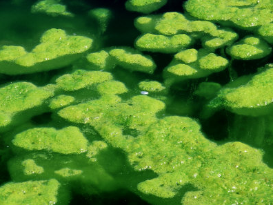

Algae

Algae are a diverse group of photosynthetic organisms that belong to several different kingdoms, including Plantae, Protista, and Bacteria (cyanobacteria). They are found in a wide range of aquatic and terrestrial habitats, from freshwater ponds and oceans to soil, rocks, and even the fur of sloths. Algae play crucial roles in ecosystems as primary producers, oxygen providers, and nutrient cyclers.
Key Characteristics
- 1. Photosynthetic Structure: Algae possess chlorophyll and other pigments that enable them to capture sunlight and convert it into chemical energy through photosynthesis. This process produces oxygen as a byproduct and is critical for sustaining life on Earth.
- 2. Cellular Diversity: Algae exhibit a wide range of cellular structures, including single-celled forms (e.g., diatoms), colonial forms (e.g., Volvox), filamentous forms (e.g., Spirogyra), and multicellular forms (e.g., seaweeds). Their cellular organization varies from simple to complex, depending on the species.
- 3. Habitat Adaptations: Algae have adapted to various environmental conditions, including freshwater, marine, and terrestrial habitats. They can thrive in diverse environments, from the icy waters of polar regions to the scorching heat of deserts.
Classification
Algae are classified into several groups based on their pigmentation, cellular structure, and evolutionary relationships:
- Green Algae (Chlorophyta): Green algae are characterized by their green chloroplasts, which contain chlorophyll a and b. They include diverse forms such as unicellular Chlamydomonas, colonial Volvox, filamentous Spirogyra, and multicellular Ulva (sea lettuce).
- Red Algae (Rhodophyta): Red algae are characterized by their red pigments, which include chlorophyll a and phycobilins. They are primarily marine and include species such as Corallina (coralline algae) and Porphyra (nori seaweed).
- Brown Algae (Phaeophyta): Brown algae are characterized by their brown pigments, including fucoxanthin. They are primarily marine and include species such as kelp (Macrocystis) and rockweeds (Fucus).
Habitat and Adaptations
Algae inhabit diverse habitats and exhibit various adaptations:
- Aquatic Environments: Algae are abundant in aquatic ecosystems, where they play crucial roles as primary producers, oxygen producers, and food sources for aquatic organisms. They can be found in freshwater ponds, lakes, rivers, and oceans, as well as in wetlands and estuaries.
- Terrestrial Environments: Some algae can survive in terrestrial habitats such as soil, rocks, trees, and the surfaces of buildings. They contribute to soil fertility, rock weathering, and ecosystem stability in these environments.
- Extreme Environments: Certain algae are adapted to extreme environments such as hot springs, acidic bogs, salt flats, and polar regions. They exhibit adaptations to survive and thrive under conditions of high temperature, acidity, salinity, and UV radiation.
Ecological and Economic Importance
- Primary Production: Algae are important primary producers in aquatic ecosystems, providing the foundation of food webs and supporting diverse communities of organisms.
- Oxygen Production: Algae contribute a significant portion of the Earth's oxygen production through photosynthesis, playing a crucial role in regulating atmospheric oxygen levels and supporting aerobic life.
- Nutrient Cycling: Algae play important roles in nutrient cycling, carbon sequestration, and ecosystem functioning, helping to maintain water quality and ecosystem health.
Conservation Challenges
Algae face threats from habitat destruction, pollution, climate change, invasive species, and overharvesting. Conservation efforts focus on preserving natural habitats, reducing pollution, promoting sustainable aquaculture practices, and studying the ecological roles and diversity of algae in different ecosystems.
Algae, with their diverse forms, ecological roles, and potential applications, are important components of aquatic and terrestrial ecosystems. Understanding and conserving these organisms is essential for maintaining ecosystem health, biodiversity, and the sustainable use of natural resources.